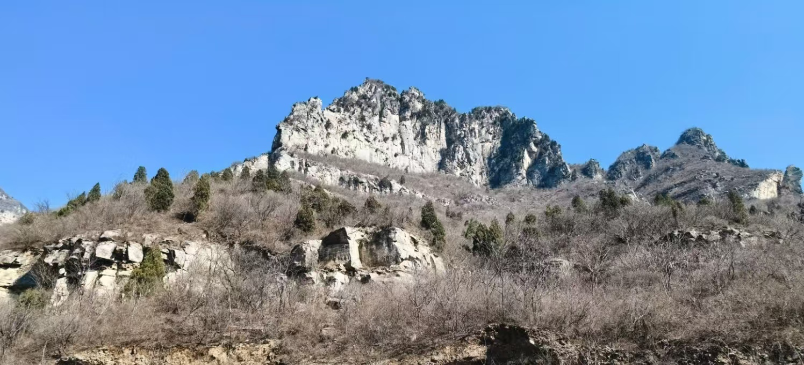
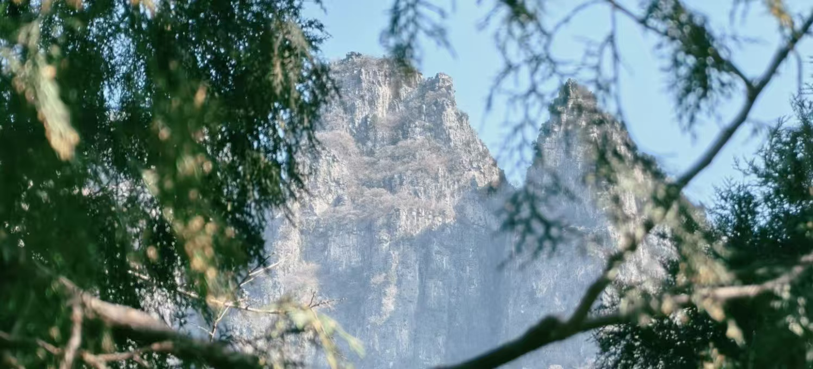

神农山位于河南省焦作市沁阳市，地处太行山脉最南端，是国家5A级旅游景区、世界地质公园、国家级风景名胜区。景区因炎帝神农氏在此尝百草、辨五谷、登坛祭天而得名，拥有“中华道教名山”之美誉，也是太行山水的核心代表景区之一。
神农山风景雄奇险峻，集雄、奇、险、秀、幽于一身。核心景观“神农顶”海拔1028米，登顶可一览太行全景；景区内白皮松群落、龙脊长城、云阳寨等景观独具特色，是登山探险、道教文化朝圣、自然观光的绝佳去处。

📍 地址：河南省焦作市沁阳市神农山风景区
🎫 门票：成人门票65元左右；学生凭学生证半价；60岁以上老人、1.4米以下儿童、现役军人等凭证免票
⏰ 开放时间
旺季（4月—10月）07:00-18:00；淡季（11月—3月）07:30-17:00，全年开放
🚗 交通指南
🍜 当地特色美食
经典一日游：景区入口 → 猕猴保护区 → 云阳寨 → 一线天 → 神农坛 → 紫金顶 → 返程。
休闲两日游：Day1 游览云阳寨、一线天，宿景区民宿；Day2 登顶紫金顶、参观神农大殿，打卡全景。
1. 神农山以登山为主，台阶陡峭，务必穿着舒适防滑登山鞋
2. 景区山林较大，建议携带饮用水和补充能量的零食，做好防晒
3. 山区气候变化快，山顶风大，出行建议携带薄外套
4. 龙脊长城路段悬崖边无护栏，拍照时注意安全，不要翻越
5. 神农坛区域祭拜礼仪庄重，参观时保持安静，尊重习俗
6. 节假日人流大，建议提前线上购票，快速入园节省时间
春季山花烂漫，太行山脉绿意盎然，是踏青赏花的好时节；夏季瀑布水丰，山林清幽避暑，气候舒适；秋季层林尽染，山色金黄，登山视野极佳；冬季雪景壮阔，绝壁冰挂别具北国风情。